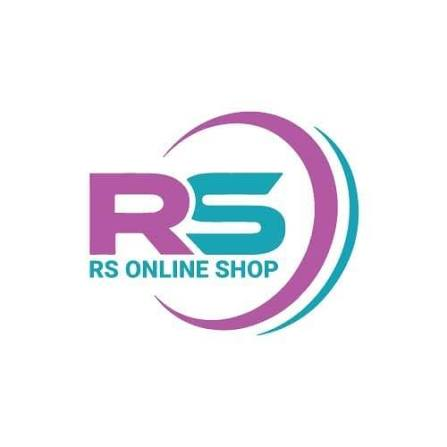

| Home | Product Menu | Product Details | Registration |
R.S Online Shopping Systems is a modern electronic shopping platform that provides high-quality technology products to customers. We offer advanced electronic gadgets with excellent performance and reliability.
Our company was established to make electronic shopping simple, fast, and reliable for everyone. Customers can easily browse products, compare features, and select the best technology solutions according to their needs.
We provide different categories of products such as laptops, smartphones, tablets, cameras, and computer accessories. Each product is carefully selected to provide better quality and customer satisfaction.
All products available in our store are selected from trusted brands with excellent performance and durability. We ensure that customers receive original products with modern features.
Our laptop collection includes professional laptops suitable for students, employees, and business users. These laptops provide high speed, large storage capacity, and powerful processors.
Our smartphones provide advanced features such as 5G technology, high-resolution cameras, long battery life, and powerful processors for a better user experience.
Customers can easily view product details, select products, and register for purchasing through our online shopping system. Our simple navigation helps users complete their shopping process.
We focus on customer satisfaction by providing quality products, reasonable prices, secure purchasing options, and better customer service.
Our website provides an easy navigation system where users can explore different products and choose suitable electronic gadgets quickly.
R.S Online Shopping Systems continues to improve technology shopping experience with innovative solutions and modern digital services.